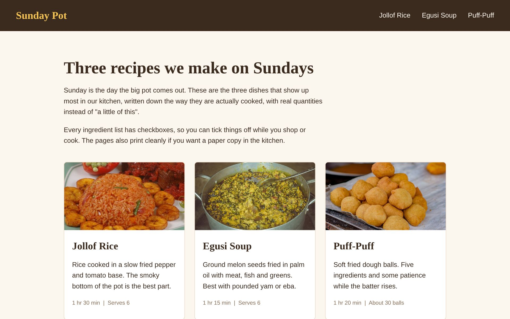

Sunday Pot
A three page recipe site for jollof rice, egusi soup and puff-puff. The ingredient lists have checkboxes that cross things out as you shop, and the pages print without the header and footer.
No JavaScript at all. Semantic HTML, flexbox, one media query, the
:checked selector and a print stylesheet.
HTML, CSS
